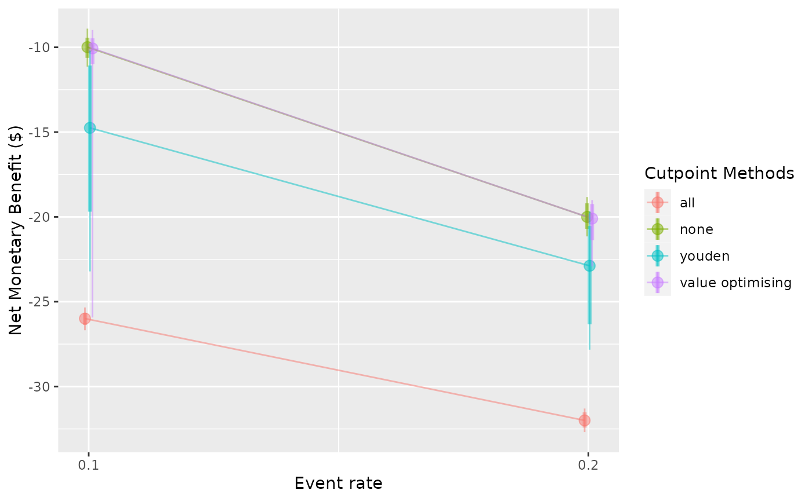
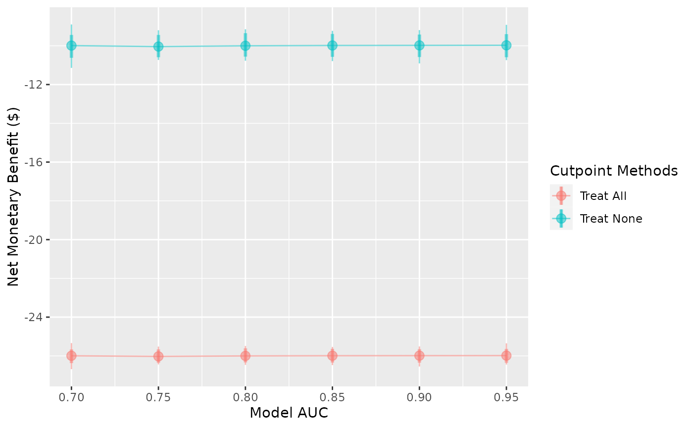
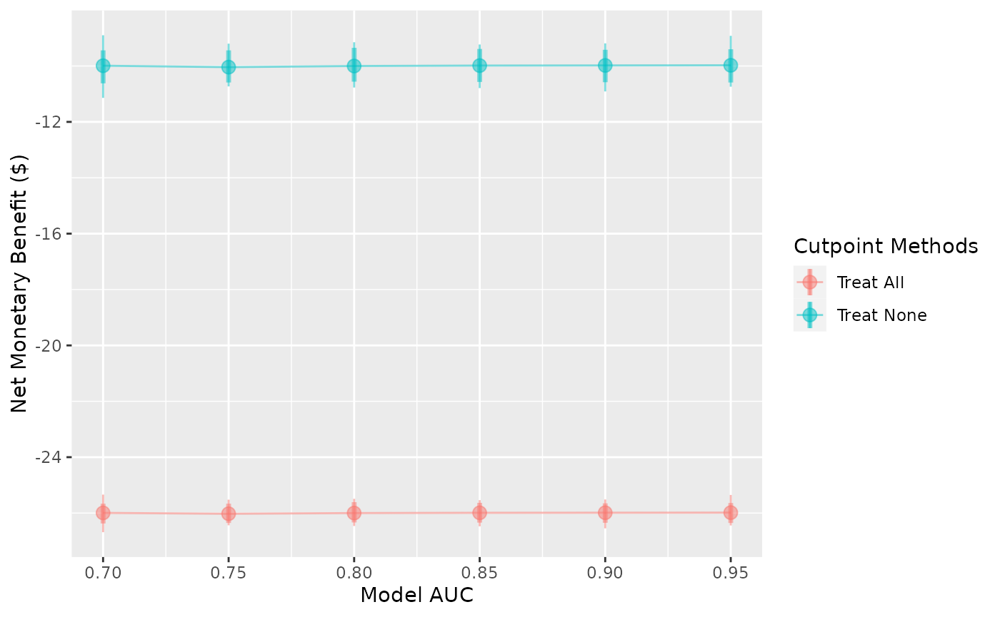

Summarising results from predictNMB
summarising-results-with-predictNMB.Rmd
library(predictNMB)
library(parallel)
set.seed(42)Making plots with predictNMB
This vignette is purely about how to use the plot() method and make_summary_table() to visualise and summarise the simulations made using predictNMB. For an introduction to predictNMB, please see the other vignette.
Firstly, as an example case, we will run screen_simulation_inputs().
get_nmb_sampler_training <- function() {
c(
"TP" = rnorm(n = 1, mean = -80, sd = 5),
"TN" = 0,
"FP" = -20,
"FN" = rnorm(n = 1, mean = -100, sd = 10)
)
}
get_nmb_sampler_evaluation <- function() {
c(
"TP" = -80,
"TN" = 0,
"FP" = -20,
"FN" = -100
)
}
cl <- makeCluster(detectCores())
sim_screen_obj <- screen_simulation_inputs(
n_sims = 500,
n_valid = 10000,
sim_auc = seq(0.7, 0.95, 0.05),
event_rate = c(0.1, 0.2),
fx_nmb_training = get_nmb_sampler_training,
fx_nmb_evaluation = get_nmb_sampler_evaluation,
cutpoint_methods = c("all", "none", "youden", "value_optimising"),
cl = cl
)
stopCluster(cl)Choosing the x-axis variable and other constants
In this simulation screen, we vary both the event rate and the model discrimination. There are many ways that we could visualise these data. The plot() allows us to make some basic plots to compare different cutpoint methods regardin the Net Monetary Benefit (NMB) and another variable of our choice. In our case, we can choose between the sim_auc and event_rate. We control this with the x_axis_var argument.
plot(sim_screen_obj, x_axis_var = "sim_auc")
#>
#>
#> Varying simulation inputs, other than sim_auc, are being held constant:
#> event_rate: 0.1
plot(sim_screen_obj, x_axis_var = "event_rate")
#>
#>
#> Varying simulation inputs, other than event_rate, are being held constant:
#> sim_auc: 0.7

For these plots, one of the screened inputs will be the x-axis variable and the other will only displayed at one of it’s levels. The default will assume the first level, so when we visualised the change in NMB as sim_auc increased, we were only observing this for the case where event_rate = 0.1. We can choose to select another level with the constants argument. This argument expects a named list containing the values to keep for the screened inputs which are not shown on the x-axis.
plot(sim_screen_obj, x_axis_var = "sim_auc", constants = list(event_rate = 0.1))
#>
#>
#> Varying simulation inputs, other than sim_auc, are being held constant:
#> event_rate: 0.1
plot(sim_screen_obj, x_axis_var = "sim_auc", constants = list(event_rate = 0.2))
#>
#>
#> Varying simulation inputs, other than sim_auc, are being held constant:
#> event_rate: 0.2
We see both a change to the plot as well as the message produced when the plot is made.
Choosing a y-axis variable
There are three options for the y-axis. The default is the NMB, but you can also visualise the Incremental Net Monetary Benefit (INB) and the selected cutpoints. These are controlled by the what argument which can be any of c("nmb", "inb", "cutpoints"). If a vector is passed, the first value is used. If you choose to visualise the INB, you must your chosen reference strategy for the calculation in the inb_ref_col.
plot(sim_screen_obj, what = "nmb")
plot(sim_screen_obj, what = "inb", inb_ref_col = "all")
plot(sim_screen_obj, what = "cutpoints")


Selecting what to show on the plot
The plots show, be default, the median (the dot), the 95% confidence interval (thick vertical lines), and the range (thin vertical lines), and the lines between the points. These can each be shown or hidden independently, and the width of the confidence interval can be controlled using the ci argument.
plot(sim_screen_obj)
plot(sim_screen_obj, plot_range = FALSE)
plot(sim_screen_obj, plot_ci = FALSE, plot_range = FALSE)
plot(sim_screen_obj, plot_ci = FALSE, plot_range = FALSE, plot_line = FALSE)
plot(sim_screen_obj)


Other plot modifications
Currently, the lines and dots overlap. We can use dodge_width to apply a horizontal dodge for all layers.


The cutpoint methods can be renamed or removed. To rename them, pass a named vector to the rename_vector argument. The names of the vector are the new names and the values are the names you wish to replace.
plot(sim_screen_obj)
plot(
sim_screen_obj,
rename_vector = c("Treat All" = "all", "Treat None" = "none")
)

You can reorder the methods by passing the order as the methods_order argument. Also note that this will remove all methods which aren’t included, and it will factor the names AFTER it has renamed them, so if you are both renaming and re-ordering, you must provide the updated names.
plot(sim_screen_obj)
plot(sim_screen_obj, methods_order = c("all", "none"))
plot(
sim_screen_obj,
rename_vector = c("Treat All" = "all", "Treat None" = "none"),
methods_order = c("Treat All", "Treat None")
)

 The transparency of all layers can be controlled with
The transparency of all layers can be controlled with plot_alpha.

 
